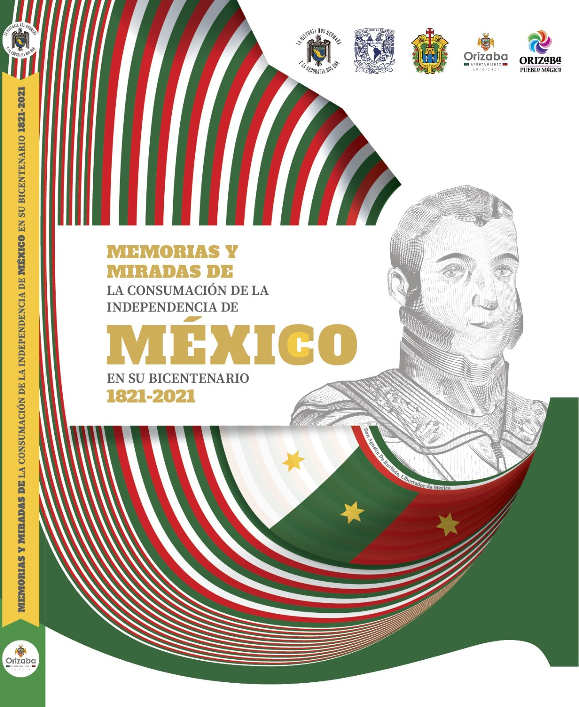
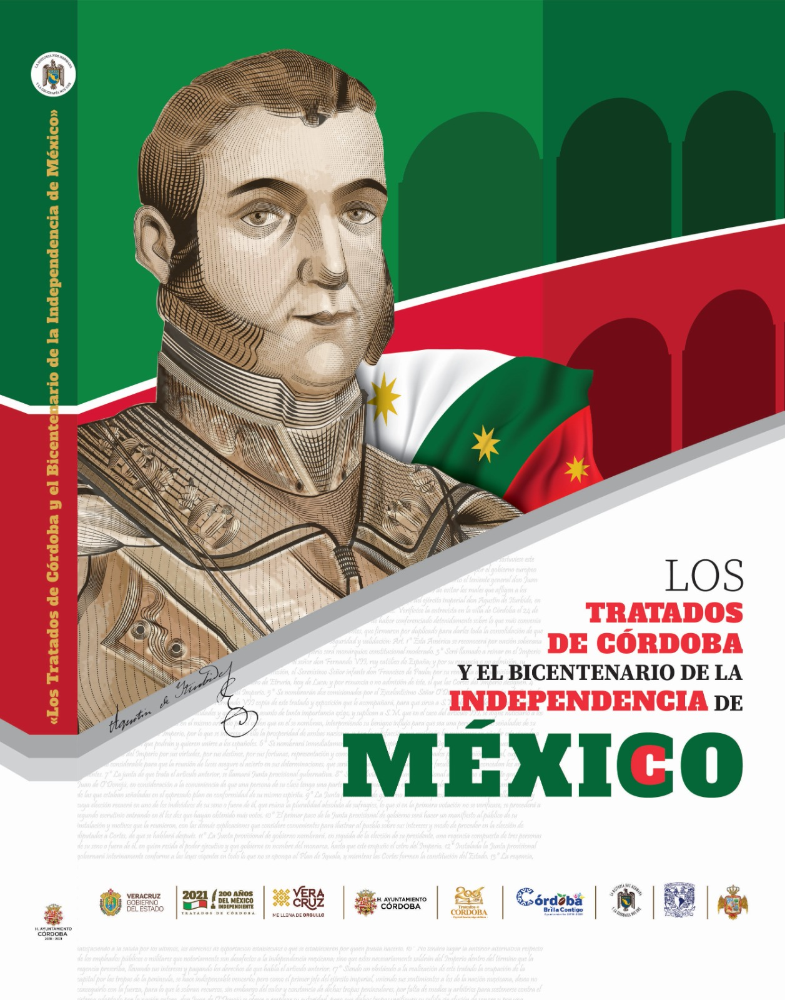
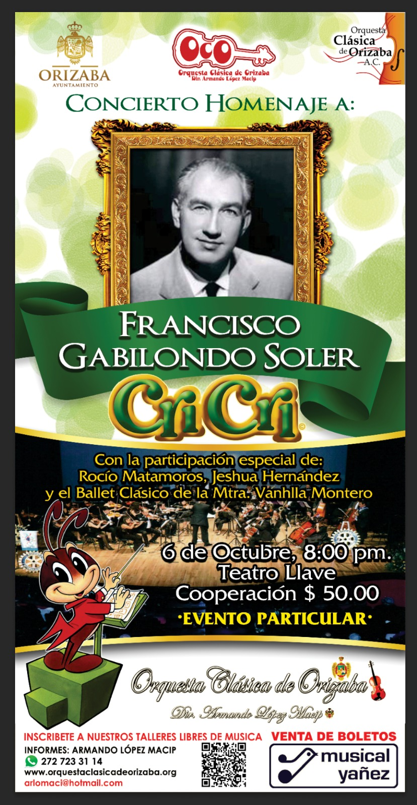

Armando Sacramento López Macip
Doctor en Innovación y Formación del Profesorado, Historiador, Cronista del Valle de Orizaba, Director de Orquesta y Escritor.
Con más de 40 años de servicio docente ininterrumpido como Profesor de Carrera en el Instituto Tecnológico de Orizaba (ITO), ha liderado proyectos de preservación histórica, gestión de museos y casas de cultura, además de ser autor y coautor de múltiples obras historiográficas de relevancia nacional e internacional.
Formación Académica & Grados Doctorales
Su sólida preparación académica abarca diversas ramas de la ciencia, las humanidades, las artes y la pedagogía técnica:
- ◆ Doctor en Innovación y Formación del Profesorado: Universidad Autónoma de Madrid.
- ◆ Doctor Honoris Causa: Otorgado por la ANHG UNAM (2025).
- ◆ Maestro en Ciencias: Especialidad en Administración y Desarrollo de la Educación por el Instituto Politécnico Nacional (IPN).
- ◆ Licenciado en Historia: Universidad Autónoma de Zacatecas.
- ◆ Licenciado en Educación Artística: Universidad Veracruzana.
- ◆ Ingeniero Industrial Químico: Instituto Tecnológico de Orizaba (ITO).
- ◆ Especialista en Docencia: Centro de Investigación Interdisciplinaria de Investigación y Docencia para la Educación Técnica (CIIDET).
Trayectoria Cultural y Dirección Orquestal
Fundó en 1985 la Orquesta Clásica de Orizaba A.C., organización musical independiente que dirige de manera ininterrumpida. Fue Director de la Casa de Cultura del ITO (1990-1995) y Director de Cultura del H. Ayuntamiento de Orizaba en dos periodos edilicios (2001-2004 y 2008-2009).
Libros y Publicaciones del Autor
Colección de obras historiográficas del Dr. Armando Sacramento López Macip.

Historia del Instituto Tecnológico de Orizaba

Historia del Gran Teatro Llave de Orizaba
.jpeg)
Vida y obra de los Padres del Oratorio
.jpeg)
Orizaba y sus Palacios de Gobierno

Historia del Hospital Regional de Río Blanco
.jpeg)
Historia del templo y convento de San José de Gracia de Orizaba

Río Blanco Cuna del Movimiento Obrero

El Legado de los Mártires de 1907
.jpeg)
Río Blanco: Pionero de la Ed. Técnica
.jpeg)
Gral. Ignacio de la Llave

Nogales, Ver. Historia Básica

Consumación de la Independencia

Los Tratados de Córdoba y el Bicentenario
Próximo Concierto Homenaje

Concierto Homenaje a: Francisco Gabilondo Soler "Cri-Cri"
Orquesta Clásica de Orizaba A.C. • Dir. Dr. Armando López Macip
Participación Especial:
Rocío Matamoros, Jeshua Hernández y el Ballet Clásico de la Mtra. Vanhlla Montero.
Informes & WhatsApp: 272 723 31 14 | arlomaci@gmail.com
Historia de la orquesta
Registro para Audición o Talleres Libres
Completa tus datos institucionales para recibir informes directos.
El Blog del Maestro
Espacio de divulgación e historia administrado directamente por el Dr. Armando S. López Macip.
Cargando publicaciones del maestro...
Contacto Directo con el Maestro
Envía un mensaje o consulta directamente al Dr. López Macip para asuntos académicos, historiográficos, conferencias o boletos de la Orquesta Clásica.